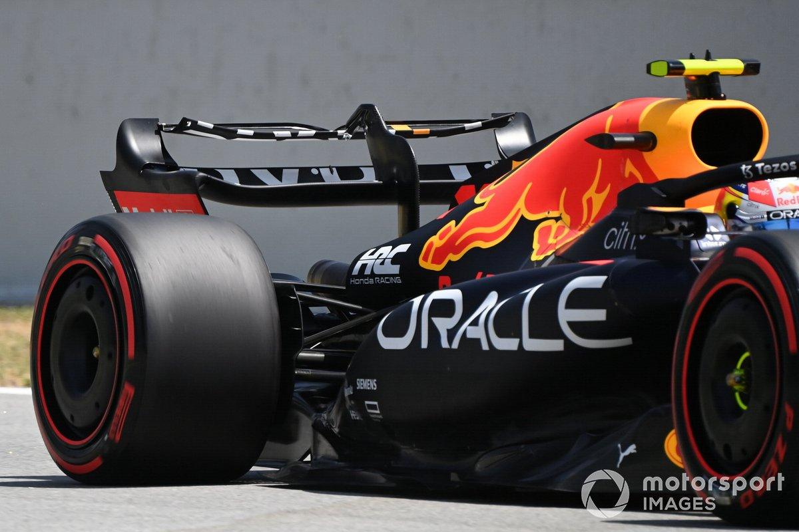

Inside an F1 Car

Formula 1 cars are some of the most advanced racing machines ever created. They are designed to travel at incredible speeds while maintaining grip, stability and safety.
Every part of the car is carefully designed. Engineers spend thousands of hours improving aerodynamics, suspension, braking systems and power units.
Even the smallest design improvement can make a difference when drivers are competing at extremely high speeds.
Important Parts of an F1 Car
Aerodynamics
Wings and bodywork control airflow around the car. They generate downforce, helping tyres maintain grip through corners.
Power Unit
Modern F1 cars use hybrid power units that combine a turbocharged internal combustion engine with electrical energy systems.
Braking System
Carbon-based brakes allow drivers to slow down from extremely high speeds while managing heat and maintaining control.
Race Strategy
Winning in Formula 1 is not just about being the fastest driver. Teams must make important strategic decisions throughout a race.
One of the most important decisions is when to make a pit stop. Drivers enter the pit lane to change tyres, and their teams must complete the stop as quickly as possible.

Tyre Compounds
Formula 1 uses different dry-weather tyre compounds. Softer tyres generally provide more grip but wear out faster, while harder tyres tend to last longer.
- Soft: More grip, usually less durability.
- Medium: A balance between speed and durability.
- Hard: More durability, usually less grip.
Why Technology Matters
Technology is one of the biggest reasons Formula 1 is so competitive. Teams constantly analyse data and develop new ideas to improve their cars. Engineering, teamwork and innovation are just as important as driving ability.